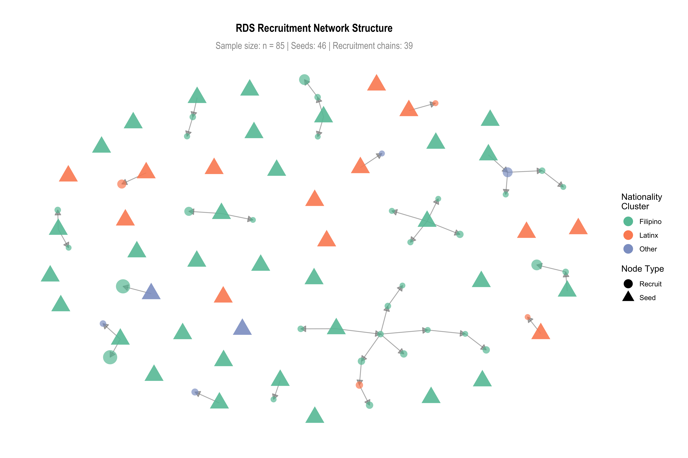
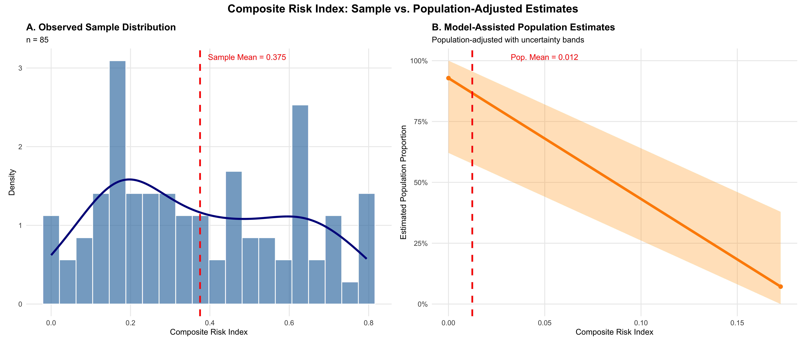
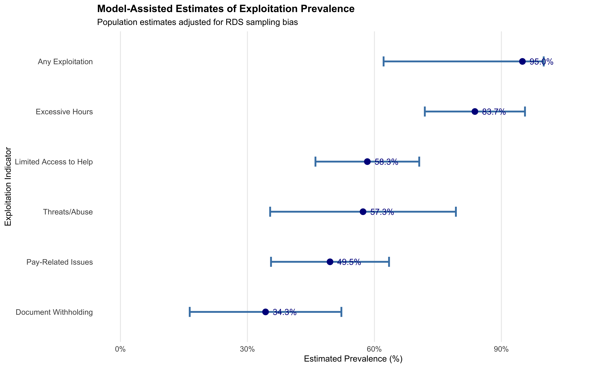
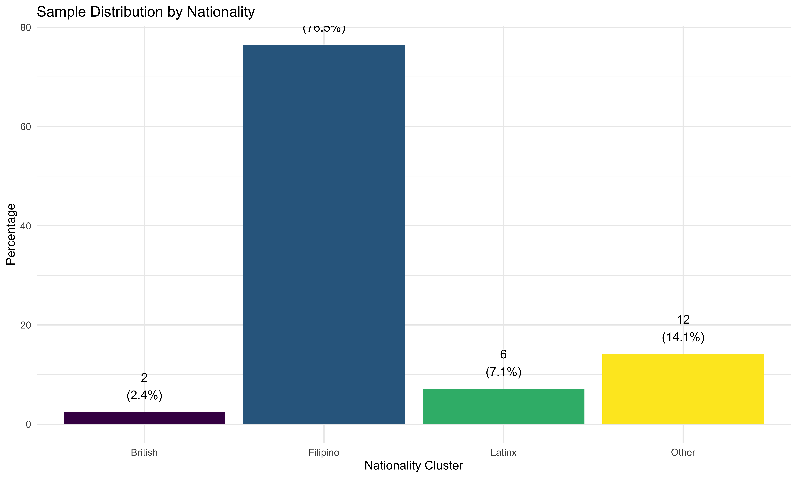

Quantifying Hidden Exploitation: Dual-Method Prevalence Estimates of Modern Slavery Risk Among UK Domestic Workers1
Introduction
* Why study labour exploitation among UK domestic workers?
* Gap in existing research.
* Contributions: (1) Conceptualisation of exploitation (binary vs. continuous, risk index), (2) Novel use of dual methods (RDS & NSUM), (3) Policy relevance.Labour exploitation has been defined as ‘work situations that deviate significantly from standard working conditions as defined by legislation or other binding legal regulations, concerning in particular remuneration, working hours, leave entitlements, health and safety standards and decent treatment’ (European Union for Fundamental Rights 2015, 10). In the operations and supply chain management literature, businesses’ respect for these kinds of employee labour rights began with studies focused upon labour rights transgressions related to risk reduction and risk communication and considered how to improve employees’ health and safety (Chinander 2001; Wolf 2001). Recently, more serious labour rights abuses have come to the fore with studies examining the challenges of severe labour abuse under the umbrella term ‘modern slavery’ (Gold, Trautrims, and Trodd 2015; New 2015; Benstead, Hendry, and Stevenson 2018; Stevenson and Cole 2018). While this literature offers important insights into these severe forms of labour exploitation in global supply chains, the wider social sustainability literature has been criticised for taking a de-humanised approach to the understanding of workers and their working conditions (Soundararajan, Wilhelm, and Crane (2021)). Perhaps as a result, little attention has been paid to workers’ experiences of severe forms of labour exploitation in the literature to date. While recent projects seek to examine the phenomenon of worker voice in factory settings (Leverhulme Trust (2022)), nowhere are the realities of individual workers’ experiences of employer exploitation brought into sharper relief than in the setting of domestic work in private households.
The authors of the Global Slavery Index estimate that there are seventy-six million people employed in domestic work worldwide (International Labour Organization, Walk Free, and Institute of Migration (2022)).2 According to Bonnet, Carre, and Vanek (2022), eighty percent of this domestic work is unregulated and informal. Labour exploitation has been identified as an extensive global problem within the sector, with domestic work identified as one of five private sector groupings which contribute the most to forced labour. Defined in the ILO Forced Labour Convention, 1930 No.29, forced or compulsory labour is ‘all work or service which is exacted from a person under the threat of a penalty and for which the person has not offered himself or herself voluntarily’ (International Labour Organization, Walk Free, and Institute of Migration (2022)). Seventy-six percent of domestic workers are women, and these workers represent four percent of the total female workforce (International Labour Organization, Walk Free, and Institute of Migration (2022)). Indeed, women in forced labour are much more likely to be in domestic work than in any other occupation (International Labour Organization, Walk Free, and Institute of Migration 2022). The ILO suggest that female domestic workers may be coerced through non-payment of wages; abuse of vulnerability; subjected to physical and sexual violence or experience threats against their family members. Such severe forms of labour exploitation may be present alongside other, perhaps less severe but equally illegal, practices which constitute various forms of labour abuse. The criminalisation of both labour exploitation and abuse in a domestic setting has developed in recent times, with legislation enacted in the United Kingdom (UK), Europe, Australia and Norway to criminalise such severe exploitation under the term ‘modern slavery’. However, even where modern slavery laws are in place, reliance on traditional, inspection-led, approaches to detection designed primarily to ensure labour rights compliance within communal workplaces such as factories mean that the number of reported cases of labour exploitation in private dwellings may well severely underestimate actual exploitation levels. This article aims to contribute to a more nuanced understanding of how survey techniques may be developed to improve understanding of the realities of workers’ conditions by demonstrating the use of a statistically robust estimation of the nature and proportion of labour exploitation and abuse among domestic workers in the UK. This setting was chosen due to long-standing national legislation criminalising modern slavery introduced to the UK in 2015. Despite, or perhaps because of this legislation, in recent years the number of potential victims entering the UK’s National Referral Mechanism (NRM), a scheme which provides government support for those suspected to be modern slavery survivors, has continued to increase. Nineteen thousand, one hundred and twenty-five potential victims were recorded in 2024: the highest annual figure since the NRM began (Home Office 2025). In 2024, for the first time the number of cases of potential modern slavery among females handled by the charity Unseen, who run the UK’s modern slavery helpline, were more prevalent than those among men (Carter (2025)). Despite these worrying headline statistics, and the persistence of specific concerns about high levels of exploitation among domestic workers in the grey literature (Kalayaan (2008); Mantouvalou (2016); Latin American Women’s Rights Service (2023)), to our knowledge no-one has yet estimated the nature and extent of labour exploitation and abuse that may exist among domestic workers in the UK.
In contrast to overseas factory workers in globally dispersed, product, supply chains, many service workers engaged in domestic work have migrated to work in the UK. These transnational workers enter on restricted visas where their employment—and their right to remain in the country—is tied to their continuing employment. It is now ten years since the UK’s Modern Slavery Act was enacted. During its passage through parliament, those advocating for the rights of domestic workers were successful in expanding the final category boundaries of the legislation to include, in Section 53, the specific definition of (overseas) domestic workers as modern slavery victims (Caruana, Crane, and Ingram (2025)). These transnational migrants are at particular risk of exploitation due to regulatory visa restrictions and intersecting structural issues related to their gender, the relative isolation of domestic work and a lack of supportive social networks. This can mean that they fall out of legal migratory status. Due to the social stigma attached to such illegal working, transnational workers remaining in the UK without the right to work may be considered a hidden, hard-to-reach, population. Extracting a sample of domestic workers which includes this group raises difficulties when trying to employ the normal statistical sampling methods considered necessary for robust prevalence estimation. Perhaps due to these sampling difficulties, we know relatively little about the nature of labour exploitation among this particularly at-risk group of workers. Fortunately, there has been significant interest in the development of alternative methods for prevalence estimation which include such hard-to-reach groups, with many scholars advocating and developing the use of respondent-driven sampling (RDS) techniques to support statistically robust estimators.
In this paper, we make two specific contributions to the operations and supply chain management literature. First, we demonstrate the use of RDS coupled with Network Scale-up Methods (N-SUM) to reach and sample respondents’ views of their working conditions among these, predominantly female, transnational migrant domestic workers. We use the data we obtain from these respondents to show how such a survey can be used to estimate the proportion of workers experiencing labour exploitation. Second, we begin to capture the nature and extent of modern slavery as voiced by domestic service workers thereby, we believe, expanding the nascent literature on worker voice which has, in the main, focussed primarily upon factory workers (Stephens et al. (2024)). These contributions not only extend our understanding of the risks of labour exploitation and abuse among service workers engaged in domestic settings but also show how it is possible to shed light on the severity of the individuals’ experience of exploitation through the construction of a novel risk index. The remainder of this paper is structured as follows. First, we describe our conceptual framework and introduce the context of our study in more detail, highlighting what is already known about the current population of domestic workers in the UK and the conditions in which they work. Next, we describe our research methods. We review the development of the respondent-driven sampling (RDS) techniques we used and explain why this sampling method is suitable for our study. We then describe our survey methods, including how we designed our survey instrument, contacted our sample seeds and analysed our data. We then present and discuss our findings, detailing the proportional estimate that we calculated and the risk index we constructed. In our discussion, we expand upon the implications of our findings for government policy, enforcement practices and further research, including how these methods may be used in future studies of labour exploitation in other sectoral and geographic contexts. The limitations of our study are outlined, before, finally, we conclude our article.
Conceptualising Labour Exploitation and the Degree of Risk
* Binary vs. continuous definitions.
* Risk index construction and theoretical justification.
Modern slavery has been criticised by some for its overly extensive scope: encapsulating a broad range of divergent sub-categories of exploitation (O’Connell Davidson (2015); Gutierrez-Huerter O, Gold, and Trautrims (2023)). For this reason, we used the International Labour Organization’s (I.L.O. (2012))3 ‘Indicators of Forced Labour’ to identify the potential for severe labour exploitation and as a basis for the quantification of our labour exploitation and abuse risk index. The ILO identify eleven indicators designed to help understand how forced labour arises and how it affects victims. These indicators include: abuse of vulnerability; deception; restriction of movement; isolation; physical and sexual violence; intimidation and threats; retention of identity documents; withholding of wages; debt bondage; abusive working and living conditions and excessive overtime. According to the ILO, the presence of a single indicator in any given situation may in some cases imply the existence of forced labour. However, it also suggests that in other cases it may be necessary to look for several indications which, taken together, may point to a case of forced labour. We seek to refine this statement through the construction of a composite index by which means a degree of risk related to the likelihood of a domestic worker experiencing this most severe form of exploitation may be distinguished from the likely occurrence of less severe, though similarly illegal, forms of labour abuse.
Evaluating the Degree of Risk
The study of risk management has a long tradition in operations and supply chain management. Initially, the risks under consideration were primarily related to ensuring continuity of the supply of goods and services (see for example, Jüttner, Peck, and Christopher (2003)). Beginning with Anderson (2006) and Anderson and Anderson (2009), however, a literature stream of sustainability-related supply chain risk management developed related specifically to the risks associated with the environment and social justice. A normative consensus related to the main stages of supply chain risk management has developed in the literature, with a five-stage sequential model typically presented. There have also been empirical studies of risk management within various industrial supply chains in the United States and India (Tarei, Thakkar, and Nag (2018); Dellana, Rowe, and Liao (2021)), including the quantification of a risk index for the petroleum supply chain (Tarei, Thakkar, and Nag (2018)). Yet, while these authors recognize the need for responsible management and its effect on societal values, in line with other literature in the field they view risk from the perspective of the corporate supply chain rather than examining the risk of harm to the worker.
In our study, we conceptualise the risk of labour exploitation from the workers’ perspective. We conceive severe forms of labour exploitation such as forced labour as one end of a spectrum ranging from illegal employment practices that constitute labour abuse, such as wage payments below legal minimum wage levels and health and safety violations, through to the likelihood of criminal exploitation recognized in the UK as modern slavery. Our assessment of this personal risk permits a degree of risk to be assigned to various clusters of forced labour indicators with the more indicators present, the stronger the likelihood that the working conditions may be considered exploitative. Our approach, therefore, includes, but goes beyond, assessing the likelihood of forced labour by simply quantifying the proportion of survivors entering the UK’s National Referral Mechanism (NRM): a government system for survivor support set up to identify whether there are positive grounds for the identification of Modern Slavery. In our method, an NRM referral is used as the strongest indicator of modern slavery risk, with lesser risks assessed according to the degree to which cumulative indicators of forced labour are reported.
Case Setting: Labour Exploitation Risk Among Transnational Migrant Domestic Workers In The UK
Domestic work forms part of a broader industrial category of Personal and Household Service work (PHS). Work in this category includes those employed in ‘social work activities without accommodation’ and ‘activities of households as employers of domestic personnel’ (European Commission (2012)). In 2017, an estimated 980,000 people were engaged in PHS work in the UK (Manoudi et al. (2018)). Manoudi et al. (2018) highlight that the PHS sector is dominated by women and migrants, with many undeclared foreign workers. Detailed statistics related to the country of origin of domestic workers migrating to work in PHS in the UK are difficult to isolate before 2019. Since that time, annual migration has fluctuated – falling sharply in 2021 due in part to the COVID-19 pandemic, before later rising again above pre-pandemic levels. In the year to December 2022, the UK Home Office reported that it had issued 18,533 Overseas Domestic Worker visas (Home Office (2023)). These domestic workers came from various countries in South America and Asia, including many from the Philippines.
In 2023, Strauss and Cocco (2023) reported a big shift in the source countries of migrants arriving in the UK on the Overseas Domestic Worker and other types of worker visas. Transnational domestic workers from the Philippines and India accounted for the single largest number of applications granted (10,186 and 3,858 visas respectively), followed by smaller, but still significant, numbers of workers arriving from Bangladesh (465), Nigeria (446), Sri Lanka (444), Egypt (422), and Ethiopia (285). In the same period, smaller numbers of visa applications to work as a domestic worker in the UK were also accepted from workers from other source countries including, but not limited to, the Sudan, Nepal, Ghana, Kenya, Lebanon, Eritrea, Iran, Turkey, Yemen, Malaysia, Thailand, and Morocco. This post-Brexit increase in the diversity of source countries from which transnational workers are drawn makes a more detailed analysis of the risk of labour exploitation in the sector both timely and more urgent.
There is a long history of reports of exploitation in the domestic work sector in the UK. In 2008, the civil society organisation Kalayaan, which was formed to campaign for the formal recognition of migrant domestic workers’ rights in the UK, reported on the impact of proposed changes to the UK immigration system on migrant domestic workers (Kalayaan (2008)). Their report highlights government recognition of documented and unacceptable levels of abuse and exploitation among domestic workers in the UK as early as 1996. At this stage, new policies, including the development of a specialised visa allowing domestic workers to change employer during their stay were introduced. However, in 2012, these visa conditions were modified, tying domestic workers to a single employer and restricting the length of time that they are permitted to remain in the country to a period of six months (Gower (2016)). Overseas domestic worker visa holders are now, again, permitted to change employers, but not to apply to renew their six-month long visa unless they receive a positive ‘Conclusive Grounds’ decision related to exploitation considered to be modern slavery through the UK’s National Referral Mechanism (NRM) (Romero and Fisher (2025)).
These reports highlight the underlying reasons for migrant domestic workers’ vulnerability, including workers’ relative desperation for work; their lack of social ties; unfamiliarity with English language and culture; long working hours; lack of knowledge of their legal rights; a lack of oversight of the private home as a workplace; their work forming part of the informal economy; their reliance on their employer for permission to work in the UK; and their lack of recourse to public funds. As a result, migrant domestic workers are vulnerable to abuse ranging from minor breaches of employment and health and safety law, to physical and sexual violence, slavery, forced labour and trafficking.
That these conditions may persist is evidenced by a report from another civil society organisation, the Latin American Women’s Rights Service, which describes the results from twelve in-depth interviews with Latin American domestic workers in the UK. This report depicts high levels of isolation, exploitation and abuse including a failure by employers to provide written contracts or payslips; breaches of verbal agreements; a requirement to perform different tasks from those indicated during recruitment; increasing working hours with little or no time off; excessive work days; a lack of paid holiday; many domestic workers not registered with a GP; sexual harassment in the workplace; verbal or physical abuse; employer surveillance; a lack of opportunity to change working conditions; isolation and fear of seeking help; and high reported levels of trafficking for labour exploitation (Latin American Women’s Rights Service (2023)).
Against this backdrop, we used respondent driven sampling (RDS) as a sampling technique to recruit and survey domestic workers in the UK about the working conditions they were experiencing to estimate the nature and scale of abuse and exploitation based upon reports of their conditions by domestic workers themselves.
Research Methods
* Survey and RDS design.
* Sample recruitment and incentives.
* Estimation methods (RDS estimators, NSUM, bootstrap).Respondent-Driven Sampling (RDS) And Survey Method
Comprehensive descriptions and literature reviews of the development and use of RDS to estimate the population size of a hidden population are available elsewhere (Heckathorn (2011); Gile et al. (2018)). Suffice it to say, the possibilities of the use of a one-wave snowball sampling to allow researchers to obtain a sample of personal networks was posited by Frank and Snijders (1994). Following the identification of a set of original sample members known as seeds, Heckathorn (1997); Heckathorn (2002) advocate the use of a double incentive to recompense participants not only for their involvement, but also for their recruitment of further participants in subsequent ‘waves’ of participation by drawing upon the social ties through which members of the hidden population are connected to each other.
The typical number of original sample seeds is between two and ten: chosen as heterogeneously as possible (Gile et al. (2018)). Though they may be subject to both systematic and non-systematic errors, the use of snowballing methods for the study of hidden populations, with the support of monetary or symbolic rewards, has been advocated as a way of creating robust recruitment embodying diversity in characteristics such as ethnicity, gender and geographical location (Heckathorn (1997); Heckathorn (2002)). In these papers, Heckathorn advances the development of RDS to include self-reported network size as a population estimator and bootstrapping techniques to support the development of an estimator’s confidence intervals, an approach that has since been refined by others (Gile and Handcock (2015)). Such developments derive a new class of indicators for the population mean and define a corresponding bootstrap method to estimate the errors in RDS. The resulting ‘network working model’ permits the individual’s connectedness in the network to be tested, while reducing bias with respect to the composition of the seeds. Snowball sampling is based upon the initial recruitment of the original sample selection by means of convenience. RDS also takes a non-random approach to seed selection, but relies upon the social network structure that exists between participants to produce a non-probabilistic sample (Goodman (2011)). Incentive structure is important—though this weakness is not a feature of our target hidden population, some researchers have identified that younger men with higher socio-economic status are less likely to participate (N. McCreesh et al. (2013)). Perhaps of more concern, RDS has been described as a risky strategy since researchers cannot be sure whether enough respondents have been recruited through subsequent waves to eliminate bias within the original sample members (Vincent and Thompson (2017)).
RDS has been widely used to sample a variety of hidden populations, including HIV prevalence, rape and client-initiated gender-based violence among sex workers (Nicky McCreesh et al. (2012); Schwitters, Swaminathan, and Serwadda (2012)). While the RDS method has proved limited when seeking to provide population heterogeneity by geographical location (N. McCreesh, Johnston, and Copas (2011)), where these population features are of lesser importance, such methods have been used successfully. RDS methods have been used to survey other migrant populations (Tyldum (2021)), while such network-based referrals have been described as the only viable method to reach many types of labour trafficking victims (Zhang (2012)) and have been used to research exploitation among low-wage workers in three American cities (Bernhardt, Milkman, and N. (2009)); a study of labour trafficking in migrant communities in the city of San Diego (Vincent and Thompson (2017)); examination of the worst forms of child labour in the Indian state of Bihar (Zhang et al. (2019)); and the commercial sexual exploitation of children in Nepal (Jordan et al. (2020)).
The survey instrument included modules on demographic and employment characteristics, social network size and composition, and indicators of labour exploitation. The exploitation indicators were based on the International Labour Organization’s framework of forced labour, adapted for the UK domestic work context. These indicators allowed us to operationalise exploitation in two ways. First, we constructed binary indicators classifying respondents as exploited or not exploited, based on threshold criteria. Second, we developed a continuous risk index, designed to capture gradations of vulnerability across the full sample.
In the following section, we describe our methods, including how we designed our survey, contacted our sample seeds, and analysed our data. Our approach can best be described as Web-based RDS (Wejnert and Heckathorn (2008)). We designed a web survey using the JISC online survey interface, suitable for our respondents to complete via a mobile phone. Composite measures to quantify the extent to which respondents were at risk of labour exploitation, including severe forms of exploitation such as forced labour, were constructed from existing exploitation typologies, notably the ILO’s Indicators (I.L.O. (2012)). The survey consisted of these 11 composite indicators and included questions related to domestic workers’ level of job satisfaction, employment conditions, and demographic data such as nationality, age, and gender. The main survey was conducted in the five months between February and July 2023.
Initial Sample Selection
We selected our first wave of participants nonrandomly by convenience sampling. Mobile phone numbers were used both to identify seed participants and to act as a unique identifier for those whom they referred. To avoid sample homophily, original sample members were selected from three distinct domestic worker communities. This was facilitated by civil society organisations who represented distinct domestic worker communities. One was an exclusively online community of transnational domestic workers working in the UK, the second represented UK domestic workers of Filipino origin, and the third drew its membership from the Latin American community of domestic workers, also in the UK. Along with other academics with expertise in exploitation within domestic work, representatives from these three organisations also contributed to survey question design and facilitated the piloting of an initial version of the survey (which was translated and made available in four languages: English, Spanish, Tagalog, and Portuguese) to selected domestic workers within each community.
Survey Incentives: Incentive Design and Participation Verification
A double incentive scheme rewarded respondents both for completing the questionnaire and for each referral who went on to engage with the survey. The challenge of incentive design is to set the incentive at a level that adequately rewards respondents’ time and participation, but that also avoids the risk of fraudulent participation due to too high a monetary gain (Jordan et al. (2020)). A sum of £10 was provided for survey completion with a further £5 for each successful nomination. While respondents were asked to nominate up to 10 domestic workers within their existing social network, it was the first three of these from whom participation was requested in subsequent waves. This approach is akin to the use of vouchers in face-to-face studies as advocated by Thompson (2020).
The ethical and practical issues related to the design and effective use of incentives for RDS among vulnerable populations has been much discussed in the literature; see, for example, Wang et al. (2005); Abdul-Quader et al. (2006); Singer and Bossarte (2006); DeJong et al. (2009); Semaan et al. (2009); Brunovskis and Surtees (2010); Semaan (2010); Platt, Luthra, and Frere-Smith (2015), including the specificities of incentive use within web-based surveys (Cobanoglu and Cobanoglu (2003)). Following the principles of lottery use established by Brown, Schonfeld, and Gordon (2006) and Laguilles, Williams, and Saunders (2011), we also designed our survey to encourage the maximum extent of participation by entering all respondents completing the questionnaire into a free prize draw for £150. Research suggests that a high lottery provides the most cost-effective incentive for obtaining complete responses (Gajic, Cameron, and Hurley (2012)). While using incentives to encourage participation would seem to be desirable, it is worth noting the potential downside of respondents fabricating responses to increase their remuneration (Robinson (2014)). To minimise this risk, mobile phone numbers for each respondent and those whom they referred were collated, and each of these numbers was called by one of the authors of the paper to ascertain the veracity of the respondent as a migrant domestic worker.
Descriptive Statistics
In total, we received completed online surveys from 97 respondents. Of these respondents, 90 identified themselves as transnational migrants. Forty-five percent regarded themselves as self-employed, 39% identified themselves as employees, and 16% categorised their employment status as that of a worker.
Of the 97 respondents, 64 (66% of the total), and the largest single nationality group, reported that they had a Filipina background. Other nationalities represented included Dominican, Brazilian, Spanish, Colombian, Bolivian, Venezuelan, Cuban, and Panamanian. Female domestic workers made up 97% of the sample, with 3% of the sample comprised of male domestic workers. The age structure of the domestic workers was skewed towards those over 45 years old, with such workers representing over half of the sample (see Table 1).
Recruitment diagnostics indicate that equilibrium was reached across key demographic variables by wave X. Reported personal network sizes ranged from X to X, with a mean of X and a standard deviation of X. Figure 1 presents the recruitment tree, showing that Latinx respondents generated longer referral chains, while British respondents tended to form shorter, more fragmented networks.
| Nationality | N | % | Seeds | Recruits | Mean Degree | Median Degree |
|---|---|---|---|---|---|---|
| Filipino | 62 | 72.9 | 31 | 31 | 11.3 | 5 |
| Latinx | 17 | 20.0 | 13 | 4 | 6.9 | 5 |
| Other | 6 | 7.1 | 2 | 4 | 7.5 | 4 |
| Note: Degree refers to reported network size (Q13: number of domestic workers known). |
| Recruitment Wave | N | % | Seeds | Recruits |
|---|---|---|---|---|
| Wave 1 | 46 | 54.1 | 46 | 0 |
| Wave 2 | 26 | 30.6 | 0 | 26 |
| Wave 3 | 7 | 8.2 | 0 | 7 |
| Wave 4 | 4 | 4.7 | 0 | 4 |
| Wave 5 | 2 | 2.4 | 0 | 2 |
| Total | 85 | 100.0 | 46 | 39 |
| Note: Seeds are initial participants (recruiter.id = -1). Recruits are referred participants. |
Ethical Approval
The data collection that underpins the analysis presented in this paper was given favourable ethical approval by the lead author’s School Research Ethics Committee in January 2023. All participants were informed about the aims of the study, provided informed consent, and were assured that participation was voluntary and confidential.
Use of Artificial Intelligence in Research
Large Language Models (LLMs) were used for brainstorming the organisation of the paper and editing of text. Code co-pilot (Claude Code) was used to test and debug R scripts employed in the statistical analysis. No generative models were used to generate or simulate data.
Estimation Methods
We analysed the survey sample using multiple estimation models in order to assess robustness and conduct sensitivity analyses (see Appendix XX). The survey instrument contained both ego questions (which capture information about respondents and their personal network ties) and alter questions (which capture information about the people respondents know). These two types of network data enable two fundamentally different estimation strategies: respondent-driven sampling (RDS) estimators and network scale-up methods (NSUM). In addition, we developed and implemented a novel three-step bootstrap procedure to address uncertainty in NSUM estimates, which we describe in more detail below.
RDS-Based Estimation
RDS estimators use ego-based information. Each participant reported the number of other domestic workers they knew, and this degree information was used to adjust for the over-representation of highly connected individuals in the sample. We implemented RDS-II and Gile’s successive sampling (SS) estimator, the latter of which accounts for finite population effects and improves performance when the sample fraction is relatively large (Gile, 2011; Gile and Handcock, 2010). These estimators were used to generate prevalence estimates for binary indicators of exploitation.
For continuous traits, such as the exploitation risk index, we applied model-assisted inference approaches (Gile, 2011; Gile, Beaudry, and Handcock, 2018). These approaches combine design-based adjustments with regression models that incorporate auxiliary covariates, producing valid estimates of sample means and distributions of continuous outcomes under the RDS design.
Network Scale-Up Methods (NSUM)
NSUM relies on alter-based information. Rather than depending on respondents’ own position in the referral network and their reported degree, NSUM uses information about alters—other people in respondents’ networks. Participants reported on the number and characteristics of people they knew who met specific exploitation criteria. These reports were aggregated to estimate prevalence in the wider population of domestic workers.
The key methodological distinction between RDS and NSUM lies in how the social network is used. RDS leverages ego-level network size and recruitment paths to adjust for biases in the referral process. NSUM treats respondents as informants about a larger social universe, using alter data to infer prevalence. RDS depends on accurate self-reporting of degree and on the properties of recruitment chains, while NSUM depends on the accuracy of respondents’ knowledge about others and the representativeness of their social networks
Bootstrap Procedure for NSUM
To appropriately characterise uncertainty in NSUM estimates, we developed a novel three-step bootstrap procedure. This approach resamples respondents, their reported alters, and the exploitation classifications simultaneously, thereby capturing uncertainty at each stage of the inference process. This procedure provides more realistic confidence intervals than those generated by conventional variance estimators, particularly for small samples such as ours. Details of the bootstrap implementation and diagnostic checks are provided in Appendix (app-3step?).
Comparative Rationale
Respondent-driven sampling (RDS) and network scale-up methods (NSUM) both rely on social network structures, but they exploit different aspects of those structures for inference.
RDS uses ego-based information. Each participant reports the size of their personal network of eligible individuals, and these degree reports are combined with the wave at which respondents were recruited to adjust for unequal inclusion probabilities. The underlying logic is that individuals with larger networks are more likely to be recruited earlier and more often, creating a bias toward highly connected respondents. RDS estimators, including Gile’s successive sampling estimator, explicitly correct for this bias by weighting observations according to network degree and recruitment path. For continuous traits, such as our risk index, RDS model-assisted estimators incorporate auxiliary covariates into this weighting process to further reduce bias.
In contrast, NSUM uses alter-based information. Rather than focusing on the ego’s probability of inclusion, NSUM treats respondents as informants about the wider hidden population. Respondents are asked how many people they know with a given trait (for example, “How many domestic workers do you know who have experienced exploitation?”). These responses are then scaled up, using assumptions about network size and visibility, to infer prevalence in the broader population. This method does not depend on recruitment chains but instead on the accuracy of respondents’ knowledge about others in their social networks.
The practical difference is therefore twofold. RDS estimates are anchored in “who recruited whom” and “how many do you know,” while NSUM estimates are anchored in “how many of your alters fit this category.” RDS leverages inclusion probabilities tied to ego network size; NSUM leverages alter reports to extend beyond the sample. Applying both methods to the same dataset allows for triangulation across two fundamentally different inferential logics.
Applying both RDS and NSUM to the same survey allows triangulation across two fundamentally different inferential paradigms. For continuous outcomes, such as the exploitation risk index, only model-assisted RDS estimators are appropriate. For binary outcomes, both RDS and NSUM can be applied, enabling direct comparison of results. This dual approach strengthens the empirical credibility of our findings, highlights the conceptual value of considering exploitation both as a binary threshold and as a continuum, and demonstrates the methodological trade-offs involved in studying hidden populations.
Results
Model-Assisted Estimates of the Risk Index (Continuous Conceptualisation)
One of the central contributions of this study is the introduction of a continuous risk index to measure degrees of exposure to labour exploitation. The index was constructed from multiple indicators aligned with the International Labour Organization’s forced labour framework, weighted inductively and refined through expert consultation. Rather than treating exploitation as a dichotomy, the risk index conceptualises all domestic workers as facing some degree of potential exploitation, albeit with significant variation in intensity.
Because continuous traits cannot be estimated directly with conventional RDS estimators or NSUM, we employed model-assisted inference methods. These methods adjust for the non-random structure of RDS recruitment while permitting reliable estimation of means and distributions of continuous outcomes (Gile, 2011; Gile and Handcock, 2010; Gile, Beaudry, and Handcock, 2018).

The MA estimate suggests that approximately \(92.8\%\) of the population has zero exploitation risk, while \(~7.2\%\) has moderate risk (0.1725)
The population-weighted average risk is \(0.0124\) This represents the Model-Assisted estimate of mean exploitation risk in the population, adjusted for RDS sampling bias. It is a design-based estimate that corrects for the non-random recruitment process in RDS. The population-adjusted distribution shows less concentration in the lower risk categories compared to the raw sample, suggesting that the RDS process may have under-recruited higher-risk individuals. Figure 2 presents the comparison between the observed sample distribution and the model-assisted population estimates, demonstrating how the bias correction affects our understanding of exploitation risk in the broader domestic worker population. This pattern reinforces the conceptual claim that exploitation is best understood as a continuum rather than a simple binary condition.
Binary Exploitation Indicators (Exploited or Not Exploited)
To complement the continuous measure, we also operationalised exploitation as a binary outcome. Respondents were classified as exploited if they met threshold indicators consistent with ILO definitions. This allows estimation using both respondent-driven sampling estimators, which rely on ego-based network data, and network scale-up methods, which rely on alter-based information.
Model-Assisted (MA) Estimates
| Exploitation Indicator | Population Prevalence (95% CI) |
|---|---|
| Any Exploitation | 95.0% (62.2-100.0%) |
| Excessive Hours | 83.7% (71.9-95.6%) |
| Limited Access to Help | 58.3% (46.1-70.6%) |
| Threats/Abuse | 57.3% (35.4-79.3%) |
| Pay-Related Issues | 49.5% (35.6-63.5%) |
| Document Withholding | 34.3% (16.4-52.2%) |
| Note: Estimates adjusted for RDS sampling bias using model-assisted inference. Confidence intervals reflect design-based uncertainty. |

RDS Estimates
NULLNSUM Estimates
NULLComparative Interpretation
Table 1 summarises prevalence estimates across both methods, highlighting points of convergence and divergence. While absolute values differ slightly across RDS and NSUM (reflecting differences in ego- versus alter-based assumptions), the overall pattern is remarkably stable. Figure 4 demonstrates the comparison between frequentist RDS estimators (RDS-I, RDS-II, RDS-SS) and Bayesian model-assisted methods across all exploitation indicators. The horizontal spacing of estimates allows clear visual comparison of point estimates and uncertainty intervals, with RDS methods showing bootstrap confidence intervals and Bayesian methods showing credible intervals from MCMC estimation. Both approaches identify similar patterns of exploitation prevalence, with excessive hours showing the highest prevalence across all methods, followed by threats/abuse and pay-related issues.
Table 1 (proposed): Prevalence of labour exploitation among domestic workers, by method and subgroup
| Subgroup | RDS Estimate (%) | 95% CI | NSUM Estimate (%) | 95% CI |
|---|---|---|---|---|
| Overall sample | xx.x | (x–x) | xx.x | (x–x) |
| Latinx | xx.x | (x–x) | xx.x | (x–x) |
| Filipino | xx.x | (x–x) | xx.x | (x–x) |
| British | xx.x | (x–x) | xx.x | (x–x) |
Figure 2 (proposed): Side-by-side bar chart comparing RDS and NSUM estimates with confidence intervals for each subgroup.

Robustness Checks
A series of robustness checks were performed to assess the stability of the findings. Figure 6 presents a comprehensive forest plot comparing all prevalence estimates across indicators and methods, demonstrating remarkable consistency across different analytical approaches. Bootstrap resampling confirmed that the RDS and NSUM estimates remained stable across repeated draws. Sensitivity analyses excluding suspicious datapoints did not materially alter subgroup rankings. Analyses restricted to single subgroups confirmed that the elevated prevalence among Latinx workers was not an artifact of recruitment dynamics.
The forest plot visualization clearly shows that traditional RDS estimators (RDS-I and RDS-II) produced results consistent with the model-assisted and Bayesian estimates, albeit with wider confidence intervals in some cases. The pattern of estimates is remarkably stable across methods, with excessive hours consistently showing the highest prevalence, followed by threats/abuse and pay-related issues, while document withholding shows more moderate prevalence levels. This cross-method validation strengthens confidence in our findings and demonstrates the robustness of the dual estimation approach. Full technical details are reported in Appendices B and C.


Discussion
Implications for Policy
The UK Government has proved reluctant to respond to calls to remove the restrictive, tied, visa conditions currently in force for those migrant workers working in the UK on the Overseas Domestic Workers visa (Gower (2016)). Maintaining these restrictive conditions prevents the ratification in the UK of C189, the International Convention for Domestic Workers (I.L.O. (2012)). If the estimates resulting from our study are correct, these visa conditions place migrant domestic workers at significant risk of serious forms of labour exploitation including, in its most severe form, exploitation that exhibits the characteristics of forced labour—legally considered a form of modern slavery.
To reduce the vulnerability of transnational domestic workers to this—and other—forms of labour exploitation, we urge policy-makers to reconsider these discriminatory visa conditions and offer the same freedoms to domestic workers that are enjoyed by other groups of workers under UK law.
In addition, given the vulnerabilities experienced by workers due to the private nature of the workplace, we would urge the UK government to consider the regulation of domestic worker employers.
Finally, given the stigma and very real danger of deportation of those migrant domestic workers who may have fallen out of legal migration status, our evidence suggests that there is an urgent need for the UK Government to enforce a firewall between immigration control and labour exploitation if the true scale of abuse is to be made visible and the perpetrators brought to justice.
Implications for Practice
The UK Visa and Immigration service already offers rights-based training to migrant domestic workers via UK embassies in certain source countries. To reduce migrant domestic workers vulnerabilities, we advocate the expansion of this training both to include explicit training related to employment and labour rights within the UK and to the rapidly expanding range of new source countries from where migrant domestic workers are now drawn.
Methodological Contributions
This study makes several methodological contributions to the estimation of prevalence in hidden and hard-to-reach populations:
Dual conceptualisation of exploitation: We introduce two distinct approaches to operationalising exploitation. First, we treat exploitation as a binary outcome (exploited versus not exploited), enabling direct comparison of prevalence estimates across RDS and NSUM methods. Second, we construct a continuous risk index, acknowledging that all domestic workers may be exposed to some degree of exploitation risk. To our knowledge, this is the first application of model-assisted RDS estimators to quantify a continuous measure of exploitation risk.
Bayesian parameter sensitivity: Figure 5 demonstrates the importance of appropriate MCMC parameter selection for Bayesian model-assisted estimation. Our analysis shows that enhanced parameters (featuring longer burn-in periods and more iterations) are particularly crucial for numeric and ordinal variables, where standard parameters may suffer from convergence issues. This methodological innovation ensures robust credible interval estimation for continuous risk measures.
Combining RDS and NSUM on the same survey instrument: By designing a survey that captures both ego and alter information, we are able to apply RDS and NSUM to the same sample. This dual approach has rarely been implemented in studies of labour exploitation. It provides an opportunity to cross-validate results and assess the robustness of prevalence estimates.
Novel bootstrap procedure for NSUM: Recognising the non-random nature of an RDS sample, we developed a three-step bootstrap procedure tailored for NSUM estimation. This resamples respondents, recalculates weights, and re-estimates NSUM prevalence at each iteration. The procedure captures multiple layers of uncertainty and produces more reliable confidence intervals than conventional methods, particularly in small samples.
Application to domestic workers in the UK: Finally, by applying these methods to a population that is both highly stigmatised and under-researched, we demonstrate the feasibility of using advanced network-based estimation techniques in contexts where traditional sampling is impossible. This methodological innovation has potential applications in studies of other hidden labour markets and vulnerable populations.
Limitations of the Study
As with any empirical research, our study is subject to limitations. In terms of nationality, our sample is not representative of the demographics of those domestic workers employed on Overseas Domestic Worker Visas in 2022 the UK. Due to the increasing number of workers on Overseas Domestic Work visas from the Indian sub-continent, attempts were made also to seed respondents from this community. This proved difficult, with anecdotal information suggesting that domestic workers from this community rarely had access to a personal mobile phone. It is not therefore possible to infer the nature and extent of labour exploitation within this sub-section of the domestic worker population.
As the network structure of our sample demonstrates, even with a well-designed incentive scheme it proved difficult to recruit respondents from these communities of domestic workers in subsequent sampling waves in the time available. Most of our respondents are therefore original sample members draw from the three domestic worker communities used to seed the survey.
Further Research
We believe that web-RDS combined with statistical estimators such as NSUM offers an important method for the capture and comparison of relative proportions of labour exploitation and abuse in sectors within and beyond the UK. Network scale up methods, and potential enhancements such as Generalised network scale up estimators offer to enhance understanding, not least within operations and supply chain management research, of the extent of labour exploitation in different sectors and across industries.
Conclusion
References
Abdul-Quader, A. S., Douglas D. Heckathorn, C. McKnight, H. Bramson, C. Nemeth, K. Sabin, K. Gallagher, and D. C. Jarlais. 2006. “Effectiveness of Respondent-Driven Sampling for Recruiting Drug Users in New York City: Findings from a Pilot Study.” Journal of Urban Health 83 (3): 459–76.
Anderson, Dan R. 2006. “The Critical Importance of Sustainability Risk Management.” Risk Management (00355593) 53 (4): 66–74. https://search.ebscohost.com/login.aspx?direct=true&db=buh&AN=20781527&site=ehost-live.
Anderson, Dan R., and Kenneth E. Anderson. 2009. “Sustainability Risk Management.” Risk Management and Insurance Review 12 (1): 25–38. https://doi.org/10.1111/j.1540-6296.2009.01152.x.
Benstead, Amy V., Linda C. Hendry, and Mark Stevenson. 2018. “Horizontal Collaboration in Response to Modern Slavery Legislation: An Action Research Project.” International Journal of Operations &Amp; Production Management 38 (12): 2286–2312. https://doi.org/10.1108/IJOPM-10-2017-0611.
Bernhardt, A., R.Theodore Milkman, and N. 2009. “Broken Laws, Unprotected Workers: Violations of Employment and Labor Laws in America’s Cities.” {UCLA} {IRLE} Report.
Bonnet, Florence, Francoise Carre, and Joann Vanek. 2022. “Domestic Workers in the World: A Statistical Profile. WIEGO.” 2022. https://www.wiego.org/research-library-publications/domestic-workers-world-statistical-profile/.
Brown, J. S., T. L. Schonfeld, and B. G. Gordon. 2006. “You May Have Already Won...”: An Examination of the Use of Lottery Payments in Research.” IRB: Ethics & Human Research 28 (1): 12–16.
Brunovskis, A., and R. Surtees. 2010. “Untold Stories: Biases and Selection Effects in Research with Victims of Trafficking for Sexual Exploitation.” International Migration 48 (4): 1–37.
Carter, Justine. 2025. “Women and Girls at Growing Risk of Modern Slavery, Data Reveals. Unseen.” April 30, 2025. https://www.unseenuk.org/latest-modern-slavery-helpline-data/.
Caruana, Robert, Andrew Crane, and Claire Ingram. 2025. “The Boundaries of Modern Slavery: The Role of Exemplars in New Category Formation.” Academy of Management Journal 68 (3): 507–39. https://doi.org/10.5465/amj.2022.0210.
Chinander, Karen R. 2001. “Aligning Accountability and Awaress for Environmental Performance in Operations.” Production and Operations Management 10 (3): 276–91. https://doi.org/10.1111/j.1937-5956.2001.tb00375.x.
Cobanoglu, C., and N. Cobanoglu. 2003. “The Effect of Incentives in Web Surveys: Application and Ethical Considerations.” International Journal of Market Research 45 (4): 1–13.
DeJong, J., Z. Mahfoud, D. Khoury, F. Barbir, and R. A. Afifi. 2009. “Ethical Considerations in HIV/AIDS Biobehavioral Surveys That Use Respondent-Driven Sampling: Illustrations from Lebanon.” American Journal of Public Health 99 (9): 1562–67.
Dellana, Scott, William J. Rowe, and Ying Liao. 2021. “A Scale for Measuring Organizational Risk Management Maturity in the Supply Chain.” Benchmarking: An International Journal 29 (3): 905–30. https://doi.org/10.1108/BIJ-11-2020-0578.
European Commission. 2012. “Staff Working Docuemnt on Exploitating the Employment Potential of the Personal and Household Services, SWD (2012) Final.”
European Union for Fundamental Rights. 2015. “Severe Labour Exploitation: Workers Moving Within or into the European Union.” https://doi.org/10.1163/2210-7975_HRD-9992-2016018.
Frank, O., and T. Snijders. 1994. “Estimating the Size of Hidden Populations Using Snowball Sampling.” Journal of Official Statistics-Stockholm 10: 53–53.
Gajic, A., D. Cameron, and J. Hurley. 2012. “The Cost-Effectiveness of Cash Versus Lottery Incentives for a Web-Based, Stated-Preference Community Survey.” The European Journal of Health Economics 13 (6): 789–99.
Gile, Krista J., Isabelle S. Beaudry, Mark S. Handcock, and Miles Q. Ott. 2018. “Methods for Inference from Respondent-Driven Sampling Data.” Annual Review of Statistics and Its Application 5 (March): 65–93. https://doi.org/10.1146/annurev-statistics-031017-100704.
Gile, Krista J., and Mark S. Handcock. 2015. “Network Model-Assisted Inference from Respondent-Driven Sampling Data.” Journal of the Royal Statistical Society: Series A (Statistics in Society) 178 (3): 619–39. https://doi.org/10.1111/rssa.12091.
Gold, Stefan, Alexander Trautrims, and Zoe Trodd. 2015. “Modern Slavery Challenges to Supply Chain Management.” Supply Chain Management: An International Journal 20 (5): 485–94. https://doi.org/10.1108/SCM-02-2015-0046.
Goodman, L. A. 2011. “Comment: On Respondent-Driven Sampling and Snowball Sampling in Hard-to-Reach Populations and Snowball Sampling Not in Hard-to-Reach Populations.” Sociological Methodology 41 (1): 347–53.
Gower, M. 2016. “Calls to Change Overseas Domestic Worker Visa Conditions.” https://researchbriefings.files.parliament.uk/documents/SN04786/SN04786.pdf.
Gutierrez-Huerter O, Gabriela, Stefan Gold, and Alexander Trautrims. 2023. “Change in Rhetoric but Not in Action? Framing of the Ethical Issue of Modern Slavery in a UK Sector at High Risk of Labor Exploitation.” Journal of Business Ethics 182 (1): 35–58. https://doi.org/10.1007/s10551-021-05013-w.
Heckathorn, Douglas D. 1997. “Respondent-Driven Sampling: A New Approach to the Study of Hidden Populations.” Social Problems 44 (2): 174–99. https://doi.org/10.2307/3096941.
———. 2002. “Respondent-driven sampling II: deriving valid population estimates from chain-referral samples of hidden populations.” Social Problems 49 (1): 11–34.
———. 2011. “Comment: Snowball Versus Respondent-Driven Sampling.” Sociological Methodology 41 (1): 355–66.
Home Office. 2023. “Why Do People Come to the UK to Work?” https://www.gov.uk/government/statistics/immigration-system-statistics-year-ending-june-2023/why-do-people-come-to-the-uk-to-work.
———. 2025. “Modern Slavery: National Referral Mechanism and Duty to Notify Statistics UK, End of Year Summary 2024. GOV.UK.” 2025. https://www.gov.uk/government/statistics/modern-slavery-nrm-and-dtn-statistics-end-of-year-summary-2024/modern-slavery-national-referral-mechanism-and-duty-to-notify-statistics-uk-end-of-year-summary-2024.
I.L.O. 2012. “ILO Indicators of Forced Labour.” https://www.ilo.org/global/topics/forced-labour/publications/WCMS_203832/lang--en/index.htm.
International Labour Organization, Walk Free, and Institute of Migration. 2022. “Global Estimates of Modern Slavery Forced Labour and Forced Marriage.”
Jordan, L., C. H. K. Chui, S. Larmar, and P. O’Leary. 2020. “Overcoming Methodological Challenges in Prevalence Studies in Developing Contexts with Vulnerable Children.” International Social Work 63 (3): 371–85.
Jüttner, Uta, Helen Peck, and Martin Christopher. 2003. “Supply Chain Risk Management: Outlining an Agenda for Future Research.” International Journal of Logistics Research and Applications 6 (4): 197–210. https://doi.org/10.1080/13675560310001627016.
Kalayaan. 2008. “The New Bonded Labour?” http://www.kalayaan.org.uk/documents/Kalayaan%20Oxfam%20report.pdf.
Laguilles, J. S., E. A. Williams, and D. B. Saunders. 2011. “Can Lottery Incentives Boost Web Survey Response Rates? Findings from Four Experiments.” Research in Higher Education 52 (5): 537–53.
Latin American Women’s Rights Service. 2023. “Behind Closed Doors: Experiences of Latin American Domestic Workers in the UK.” https://lawrs.org.uk/wp-content/uploads/2023/08/Behind-closed-doors_domestic_work.pdf.
Leverhulme Trust. 2022. “Research Project Grants. Grant Listings.” 2022. https://www.leverhulme.ac.uk/listings?field_grant_scheme_target_id=15.
Maltiel, Rachael, Adrian E. Raftery, Tyler H. McCormick, and Aaron J. Baraff. 2015. “Estimating Population Size Using the Network Scale up Method.” The Annals of Applied Statistics 9 (3): 1247–77. https://doi.org/10.1214/15-AOAS827.
Manoudi, A., T. Weber, D. Scott, and J. Hawley Woodall. 2018. “An Analysis of Personal and Household Services to Support Work Life Balance for Working Parents and Carers - Google Search.” Synthesis Report {ECE} Thematic Review. European Commission. https://www.google.com/search?q=An+analysis+of+Personal+and+Household+Services+to+support+work+life+balance+for+working+parents+and+carers&rlz=1C1GCEB_enGB932GB935&oq=An+analysis+of+Personal+and+Household+Services+to+support+work+life+balance+for+working+parents+and+carers&gs_lcrp=EgZjaHJvbWUyBggAEEUYOdIBCDIzNjNqMGo3qAIAsAIA&sourceid=chrome&ie=UTF-8.
Mantouvalou, V. 2016. “Modern Slavery? The UK Visa System and the Exploitation of Migrant Domestic Workers.” In British Politics and Policy at LSE. https://blogs.lse.ac.uk/politicsandpolicy/exploitation-of-migrant-domestic-workers-in-the-uk/.
McCreesh, N., A. Copas, J. Seeley, L. G. Johnston, P. Sonnenberg, and R. J. Hayes. 2013. “Respondent Driven Sampling: Determinants of Recruitment and a Method to Improve Point Estimation.” PLoS ONE 8 (10).
McCreesh, Nicky, Simon D. W. Frost, Janet Seeley, Joseph Katongole, Matilda N. Tarsh, Richard Ndunguse, Fatima Jichi, et al. 2012. “Evaluation of Respondent-Driven Sampling.” Epidemiology 23 (1): 138–47. https://www.jstor.org/stable/23214188.
McCreesh, N., L. G. Johnston, and A. Copas. 2011. “Evaluation of the Role of Location and Distance in Recruitment in Respondent-Driven Sampling.” International Journal of Health Geography 10 (56).
New, Stephen John. 2015. “Modern Slavery and the Supply Chain: The Limits of Corporate Social Responsibility?” Supply Chain Management 20 (6): 697–707. https://doi.org/10.1108/SCM-06-2015-0201.
O’Connell Davidson, Julia. 2015. The Margins of Freedom: Modern Slavery. Palgrave.
Platt, L., R. Luthra, and T. Frere-Smith. 2015. “Adapting Chain Referral Methods to Sample New Migrants: Possibilities and Limitations.” Demographic Research 33: 665–700.
Rao, J. N. K., and C. F. J. Wu. 1988. “Resampling Inference With Complex Survey Data.” Journal of the American Statistical Association 83 (401): 231–41. https://doi.org/10.2307/2288945.
Robinson, O. C. 2014. “Sampling in Interview-Based Qualitative Research: A Theoretical and Practical Guide.” Qualitative Research in Psychology 11 (1): 25–41.
Romero, Angeli, and Oliver Fisher. 2025. “Blueprint for Safer and Fairer Migration for Low-Paid Work.” Focus on Labour Exploitation. https://labourexploitation.org/app/uploads/2025/06/Flex-Report-Blueprint-for-safer-and-fairer-migration-for-low-paid-work_final_30_June-.pdf.
Salganik, Matthew J. 2006. “Variance Estimation, Design Effects, and Sample Size Calculations for Respondent-Driven Sampling.” Journal of Urban Health 83 (November): 98–112. https://doi.org/10.1007/s11524-006-9106-x.
Schwitters, A., M. Swaminathan, and D. Serwadda. 2012. “Prevalence of Rape and Client-Initiated Gender-Based Violence Among Female Sex Workers: Kampala, Uganda.” AIDS Behaviour 19: 68–76.
Semaan, S. 2010. “Time-Space Sampling and Respondent-Driven Sampling with Hard-to-Reach Populations.” Methodological Innovations Online 5 (2): 60–75.
Semaan, S., S. Santibanez, R. S. Garfein, D. D. Heckathorn, and D. C. Jarlais. 2009. “Ethical and Regulatory Considerations in HIV Prevention Studies Employing Respondent-Driven Sampling.” International Journal of Drug Policy 20 (1): 14–27.
Singer, E., and R. M. Bossarte. 2006. “Incentives for Survey Participation: When Are They ‘Coercive’?” American Journal of Preventive Medicine 31 (5): 411–18.
Soundararajan, Vivek, Miriam M. Wilhelm, and Andrew Crane. 2021. “Humanizing Research on Working Conditions in Supply Chains: Building a Path to Decent Work.” Journal of Supply Chain Management 57 (2): 3–13. https://doi.org/10.1111/jscm.12260.
Stephens, Victoria, Amy Victoria Benstead, Helen Goworek, Erica Charles, and Dane Lukic. 2024. “Theorising Worker Voice for Supply Chain Justice – Communication, Representation and Recognition.” International Journal of Operations &Amp; Production Management 45 (3): 653–76. https://doi.org/10.1108/IJOPM-06-2023-0528.
Stevenson, Mark, and Rosanna Cole. 2018. “Modern Slavery in Supply Chains: A Secondary Data Analysis of Detection, Remediation and Disclosure.” Supply Chain Management: An International Journal 23 (April). https://doi.org/10.1108/SCM-11-2017-0382.
Strauss, D., and F. Cocco. 2023. “Britain After Brexit: The Surprising Surge in Skilled Migrants.”
Tarei, Pradeep Kumar, Jitesh J. Thakkar, and Barnali Nag. 2018. “A Hybrid Approach for Quantifying Supply Chain Risk and Prioritizing the Risk Drivers: A Case of Indian Petroleum Supply Chain.” Journal of Manufacturing Technology Management 29 (3): 533–69. https://doi.org/10.1108/JMTM-10-2017-0218.
Thompson, S. 2020. “New Estimates for Network Sampling.”
Tyldum, G. 2021. “Surveying Migrant Populations with Respondent-Driven Sampling. Experiences from Surveys of East-West Migration in Europe.” International Journal of Social Research Methodology 24 (3): 341–35.
Vincent, Kyle, and Steve Thompson. 2017. “Estimating Population Size with Link-Tracing Sampling.” Journal of the American Statistical Association 112 (519): 1286–95. https://doi.org/10.1080/01621459.2016.1212712.
Wang, J., R. G. Carlson, R. S. Falck, H. A. Siegal, A. Rahman, and L. Li. 2005. “Respondent-Driven Sampling to Recruit MDMA Users: A Methodological Assessment.” Drug and Alcohol Dependence 78 (2): 147–57.
Wejnert, C., and Douglas D. Heckathorn. 2008. “Web-Based Network Sampling: Efficiency and Efficacy of Respondent-Driven Sampling for Online Research.” Sociological Methods & Research 37 (1): 105–34.
Wolf, Frederick G. 2001. “Operationalizing and Testing Normal Accident Theory in Petrochemical Plants and Refineries.” Production and Operations Management 10 (3): 292–305. https://doi.org/10.1111/j.1937-5956.2001.tb00376.x.
Yauck, Mamadou, and Erica E. M. Moodie. 2022. “Neighboot: Neighborhood Bootstrap Method for RDS.”
Zhang, S. X. 2012. “Measuring Labour Trafficking: A Research Note.” Crime, Law and Social Change 58: 469–82.
Zhang, S. X., M. Dank, K. Vincent, P. Narayanan, S. Bharadwaj, and S. M. Balasubramaniam. 2019. “Victims Without a Voice: Measuring Worst Forms of Child Labor in the Indian State of Bihar.” Victims & Offenders 14 (7): 832–58.
Appendix A
Population Parameters
Use ~980,000 as UK domestic worker population estimate (EU data) Use 44,360 as NRM adult referrals baseline Address treatment of “don’t know” responses and zero network size claims Consider separate analysis for Filipino subgroup
The Survey
(From codebook)
Compare corresponding survey questions between RDS and NSUM methods:
- Q70/Q71 (document withholding)
- Q39+Q42/Q43 (pay issues)
- Q45+Q47+Q48/Q49 (abuse/threats)
- Q61+Q62/Q64 (excessive hours)
- Q78/Q79 (access to help)
Risk Index Implementation
- Clean coding for 13 risk categories with proper weightings
- NRM referral (0.35)
- Forced labor indicators (0.55 total)
- Below minimum wage (0.10)
Appendix B
Executive Summary
This analysis estimates the prevalence of modern slavery among domestic workers in the UK using multiple RDS methodologies. We examine two primary indicators across various population size assumptions and estimation techniques.
Key Findings: - Below minimum wage prevalence (Q36): X.X% - Y.Y% (95% CI) - NRM referral experience (Q80): A.A% - B.B% (95% CI)
- Population size estimates: 980,000 - 1.74M domestic workers
Sample Characteristics
Recruitment Network Structure
Demographic Composition

RDS Estimation Results
Model-Assisted Estimates by Population Size
<div id="dtdhhlplrj" style="padding-left:0px;padding-right:0px;padding-top:10px;padding-bottom:10px;overflow-x:auto;overflow-y:auto;width:auto;height:auto;">
<style>#dtdhhlplrj table {
font-family: system-ui, 'Segoe UI', Roboto, Helvetica, Arial, sans-serif, 'Apple Color Emoji', 'Segoe UI Emoji', 'Segoe UI Symbol', 'Noto Color Emoji';
-webkit-font-smoothing: antialiased;
-moz-osx-font-smoothing: grayscale;
}
#dtdhhlplrj thead, #dtdhhlplrj tbody, #dtdhhlplrj tfoot, #dtdhhlplrj tr, #dtdhhlplrj td, #dtdhhlplrj th {
border-style: none;
}
#dtdhhlplrj p {
margin: 0;
padding: 0;
}
#dtdhhlplrj .gt_table {
display: table;
border-collapse: collapse;
line-height: normal;
margin-left: auto;
margin-right: auto;
color: #333333;
font-size: 9px;
font-weight: normal;
font-style: normal;
background-color: #FFFFFF;
width: 90%;
border-top-style: solid;
border-top-width: 2px;
border-top-color: #A8A8A8;
border-right-style: none;
border-right-width: 2px;
border-right-color: #D3D3D3;
border-bottom-style: solid;
border-bottom-width: 2px;
border-bottom-color: #A8A8A8;
border-left-style: none;
border-left-width: 2px;
border-left-color: #D3D3D3;
}
#dtdhhlplrj .gt_caption {
padding-top: 4px;
padding-bottom: 4px;
}
#dtdhhlplrj .gt_title {
color: #333333;
font-size: 125%;
font-weight: initial;
padding-top: 4px;
padding-bottom: 4px;
padding-left: 5px;
padding-right: 5px;
border-bottom-color: #FFFFFF;
border-bottom-width: 0;
}
#dtdhhlplrj .gt_subtitle {
color: #333333;
font-size: 85%;
font-weight: initial;
padding-top: 3px;
padding-bottom: 5px;
padding-left: 5px;
padding-right: 5px;
border-top-color: #FFFFFF;
border-top-width: 0;
}
#dtdhhlplrj .gt_heading {
background-color: #FFFFFF;
text-align: center;
border-bottom-color: #FFFFFF;
border-left-style: none;
border-left-width: 1px;
border-left-color: #D3D3D3;
border-right-style: none;
border-right-width: 1px;
border-right-color: #D3D3D3;
}
#dtdhhlplrj .gt_bottom_border {
border-bottom-style: solid;
border-bottom-width: 2px;
border-bottom-color: #D3D3D3;
}
#dtdhhlplrj .gt_col_headings {
border-top-style: solid;
border-top-width: 2px;
border-top-color: #D3D3D3;
border-bottom-style: solid;
border-bottom-width: 2px;
border-bottom-color: #D3D3D3;
border-left-style: none;
border-left-width: 1px;
border-left-color: #D3D3D3;
border-right-style: none;
border-right-width: 1px;
border-right-color: #D3D3D3;
}
#dtdhhlplrj .gt_col_heading {
color: #333333;
background-color: #FFFFFF;
font-size: 100%;
font-weight: normal;
text-transform: inherit;
border-left-style: none;
border-left-width: 1px;
border-left-color: #D3D3D3;
border-right-style: none;
border-right-width: 1px;
border-right-color: #D3D3D3;
vertical-align: bottom;
padding-top: 5px;
padding-bottom: 6px;
padding-left: 5px;
padding-right: 5px;
overflow-x: hidden;
}
#dtdhhlplrj .gt_column_spanner_outer {
color: #333333;
background-color: #FFFFFF;
font-size: 100%;
font-weight: normal;
text-transform: inherit;
padding-top: 0;
padding-bottom: 0;
padding-left: 4px;
padding-right: 4px;
}
#dtdhhlplrj .gt_column_spanner_outer:first-child {
padding-left: 0;
}
#dtdhhlplrj .gt_column_spanner_outer:last-child {
padding-right: 0;
}
#dtdhhlplrj .gt_column_spanner {
border-bottom-style: solid;
border-bottom-width: 2px;
border-bottom-color: #D3D3D3;
vertical-align: bottom;
padding-top: 5px;
padding-bottom: 5px;
overflow-x: hidden;
display: inline-block;
width: 100%;
}
#dtdhhlplrj .gt_spanner_row {
border-bottom-style: hidden;
}
#dtdhhlplrj .gt_group_heading {
padding-top: 8px;
padding-bottom: 8px;
padding-left: 5px;
padding-right: 5px;
color: #333333;
background-color: #FFFFFF;
font-size: 100%;
font-weight: initial;
text-transform: inherit;
border-top-style: solid;
border-top-width: 2px;
border-top-color: #D3D3D3;
border-bottom-style: solid;
border-bottom-width: 2px;
border-bottom-color: #D3D3D3;
border-left-style: none;
border-left-width: 1px;
border-left-color: #D3D3D3;
border-right-style: none;
border-right-width: 1px;
border-right-color: #D3D3D3;
vertical-align: middle;
text-align: left;
}
#dtdhhlplrj .gt_empty_group_heading {
padding: 0.5px;
color: #333333;
background-color: #FFFFFF;
font-size: 100%;
font-weight: initial;
border-top-style: solid;
border-top-width: 2px;
border-top-color: #D3D3D3;
border-bottom-style: solid;
border-bottom-width: 2px;
border-bottom-color: #D3D3D3;
vertical-align: middle;
}
#dtdhhlplrj .gt_from_md > :first-child {
margin-top: 0;
}
#dtdhhlplrj .gt_from_md > :last-child {
margin-bottom: 0;
}
#dtdhhlplrj .gt_row {
padding-top: 8px;
padding-bottom: 8px;
padding-left: 5px;
padding-right: 5px;
margin: 10px;
border-top-style: solid;
border-top-width: 1px;
border-top-color: #D3D3D3;
border-left-style: none;
border-left-width: 1px;
border-left-color: #D3D3D3;
border-right-style: none;
border-right-width: 1px;
border-right-color: #D3D3D3;
vertical-align: middle;
overflow-x: hidden;
}
#dtdhhlplrj .gt_stub {
color: #333333;
background-color: #FFFFFF;
font-size: 100%;
font-weight: initial;
text-transform: inherit;
border-right-style: solid;
border-right-width: 2px;
border-right-color: #D3D3D3;
padding-left: 5px;
padding-right: 5px;
}
#dtdhhlplrj .gt_stub_row_group {
color: #333333;
background-color: #FFFFFF;
font-size: 100%;
font-weight: initial;
text-transform: inherit;
border-right-style: solid;
border-right-width: 2px;
border-right-color: #D3D3D3;
padding-left: 5px;
padding-right: 5px;
vertical-align: top;
}
#dtdhhlplrj .gt_row_group_first td {
border-top-width: 2px;
}
#dtdhhlplrj .gt_row_group_first th {
border-top-width: 2px;
}
#dtdhhlplrj .gt_summary_row {
color: #333333;
background-color: #FFFFFF;
text-transform: inherit;
padding-top: 8px;
padding-bottom: 8px;
padding-left: 5px;
padding-right: 5px;
}
#dtdhhlplrj .gt_first_summary_row {
border-top-style: solid;
border-top-color: #D3D3D3;
}
#dtdhhlplrj .gt_first_summary_row.thick {
border-top-width: 2px;
}
#dtdhhlplrj .gt_last_summary_row {
padding-top: 8px;
padding-bottom: 8px;
padding-left: 5px;
padding-right: 5px;
border-bottom-style: solid;
border-bottom-width: 2px;
border-bottom-color: #D3D3D3;
}
#dtdhhlplrj .gt_grand_summary_row {
color: #333333;
background-color: #FFFFFF;
text-transform: inherit;
padding-top: 8px;
padding-bottom: 8px;
padding-left: 5px;
padding-right: 5px;
}
#dtdhhlplrj .gt_first_grand_summary_row {
padding-top: 8px;
padding-bottom: 8px;
padding-left: 5px;
padding-right: 5px;
border-top-style: double;
border-top-width: 6px;
border-top-color: #D3D3D3;
}
#dtdhhlplrj .gt_last_grand_summary_row_top {
padding-top: 8px;
padding-bottom: 8px;
padding-left: 5px;
padding-right: 5px;
border-bottom-style: double;
border-bottom-width: 6px;
border-bottom-color: #D3D3D3;
}
#dtdhhlplrj .gt_striped {
background-color: rgba(128, 128, 128, 0.05);
}
#dtdhhlplrj .gt_table_body {
border-top-style: solid;
border-top-width: 2px;
border-top-color: #D3D3D3;
border-bottom-style: solid;
border-bottom-width: 2px;
border-bottom-color: #D3D3D3;
}
#dtdhhlplrj .gt_footnotes {
color: #333333;
background-color: #FFFFFF;
border-bottom-style: none;
border-bottom-width: 2px;
border-bottom-color: #D3D3D3;
border-left-style: none;
border-left-width: 2px;
border-left-color: #D3D3D3;
border-right-style: none;
border-right-width: 2px;
border-right-color: #D3D3D3;
}
#dtdhhlplrj .gt_footnote {
margin: 0px;
font-size: 90%;
padding-top: 4px;
padding-bottom: 4px;
padding-left: 5px;
padding-right: 5px;
}
#dtdhhlplrj .gt_sourcenotes {
color: #333333;
background-color: #FFFFFF;
border-bottom-style: none;
border-bottom-width: 2px;
border-bottom-color: #D3D3D3;
border-left-style: none;
border-left-width: 2px;
border-left-color: #D3D3D3;
border-right-style: none;
border-right-width: 2px;
border-right-color: #D3D3D3;
}
#dtdhhlplrj .gt_sourcenote {
font-size: 90%;
padding-top: 4px;
padding-bottom: 4px;
padding-left: 5px;
padding-right: 5px;
}
#dtdhhlplrj .gt_left {
text-align: left;
}
#dtdhhlplrj .gt_center {
text-align: center;
}
#dtdhhlplrj .gt_right {
text-align: right;
font-variant-numeric: tabular-nums;
}
#dtdhhlplrj .gt_font_normal {
font-weight: normal;
}
#dtdhhlplrj .gt_font_bold {
font-weight: bold;
}
#dtdhhlplrj .gt_font_italic {
font-style: italic;
}
#dtdhhlplrj .gt_super {
font-size: 65%;
}
#dtdhhlplrj .gt_footnote_marks {
font-size: 75%;
vertical-align: 0.4em;
position: initial;
}
#dtdhhlplrj .gt_asterisk {
font-size: 100%;
vertical-align: 0;
}
#dtdhhlplrj .gt_indent_1 {
text-indent: 5px;
}
#dtdhhlplrj .gt_indent_2 {
text-indent: 10px;
}
#dtdhhlplrj .gt_indent_3 {
text-indent: 15px;
}
#dtdhhlplrj .gt_indent_4 {
text-indent: 20px;
}
#dtdhhlplrj .gt_indent_5 {
text-indent: 25px;
}
#dtdhhlplrj .katex-display {
display: inline-flex !important;
margin-bottom: 0.75em !important;
}
#dtdhhlplrj div.Reactable > div.rt-table > div.rt-thead > div.rt-tr.rt-tr-group-header > div.rt-th-group:after {
height: 0px !important;
}
</style>
<table class="gt_table" data-quarto-disable-processing="false" data-quarto-bootstrap="false">
<thead>
<tr class="gt_heading">
<td colspan="6" class="gt_heading gt_title gt_font_normal gt_bottom_border" style>Model-Assisted Estimates by Population Size and Seed Selection</td>
</tr>
<tr class="gt_col_headings gt_spanner_row">
<th class="gt_col_heading gt_columns_bottom_border gt_left" rowspan="2" colspan="1" scope="col" id="seed_method">Seed Selection</th>
<th class="gt_col_heading gt_columns_bottom_border gt_right" rowspan="2" colspan="1" scope="col" id="pop_size_f">Population Size</th>
<th class="gt_center gt_columns_top_border gt_column_spanner_outer" rowspan="1" colspan="4" scope="colgroup" id="Prevalence Estimates (95% CI)">
<div class="gt_column_spanner">Prevalence Estimates (95% CI)</div>
</th>
</tr>
<tr class="gt_col_headings">
<th class="gt_col_heading gt_columns_bottom_border gt_right" rowspan="1" colspan="1" scope="col" id="Document-Withholding">Document Withholding</th>
<th class="gt_col_heading gt_columns_bottom_border gt_right" rowspan="1" colspan="1" scope="col" id="Pay-Issues">Pay Issues</th>
<th class="gt_col_heading gt_columns_bottom_border gt_right" rowspan="1" colspan="1" scope="col" id="Excessive-Hours">Excessive Hours</th>
<th class="gt_col_heading gt_columns_bottom_border gt_right" rowspan="1" colspan="1" scope="col" id="Threats/Abuse">Threats/Abuse</th>
</tr>
</thead>
<tbody class="gt_table_body">
<tr><td headers="seed_method" class="gt_row gt_left">sample</td>
<td headers="pop_size_f" class="gt_row gt_right">50,000</td>
<td headers="Document Withholding" class="gt_row gt_right">34.1% (16.1%, 52.1%)</td>
<td headers="Pay Issues" class="gt_row gt_right">49.3% (35.2%, 63.4%)</td>
<td headers="Excessive Hours" class="gt_row gt_right">84.0% (72.3%, 95.8%)</td>
<td headers="Threats/Abuse" class="gt_row gt_right">57.1% (34.6%, 79.6%)</td></tr>
<tr><td headers="seed_method" class="gt_row gt_left">sample</td>
<td headers="pop_size_f" class="gt_row gt_right">980,000</td>
<td headers="Document Withholding" class="gt_row gt_right">34.3% (16.4%, 52.2%)</td>
<td headers="Pay Issues" class="gt_row gt_right">49.5% (35.6%, 63.5%)</td>
<td headers="Excessive Hours" class="gt_row gt_right">83.7% (71.9%, 95.6%)</td>
<td headers="Threats/Abuse" class="gt_row gt_right">57.3% (35.4%, 79.3%)</td></tr>
<tr><td headers="seed_method" class="gt_row gt_left">sample</td>
<td headers="pop_size_f" class="gt_row gt_right">1,740,000</td>
<td headers="Document Withholding" class="gt_row gt_right">34.3% (16.0%, 52.7%)</td>
<td headers="Pay Issues" class="gt_row gt_right">49.1% (34.9%, 63.3%)</td>
<td headers="Excessive Hours" class="gt_row gt_right">—</td>
<td headers="Threats/Abuse" class="gt_row gt_right">57.0% (34.7%, 79.3%)</td></tr>
<tr><td headers="seed_method" class="gt_row gt_left">random</td>
<td headers="pop_size_f" class="gt_row gt_right">50,000</td>
<td headers="Document Withholding" class="gt_row gt_right">34.1% (16.1%, 52.1%)</td>
<td headers="Pay Issues" class="gt_row gt_right">49.3% (35.2%, 63.4%)</td>
<td headers="Excessive Hours" class="gt_row gt_right">84.0% (72.3%, 95.8%)</td>
<td headers="Threats/Abuse" class="gt_row gt_right">57.1% (34.6%, 79.6%)</td></tr>
<tr><td headers="seed_method" class="gt_row gt_left">random</td>
<td headers="pop_size_f" class="gt_row gt_right">980,000</td>
<td headers="Document Withholding" class="gt_row gt_right">34.3% (16.4%, 52.2%)</td>
<td headers="Pay Issues" class="gt_row gt_right">49.5% (35.6%, 63.5%)</td>
<td headers="Excessive Hours" class="gt_row gt_right">83.7% (71.9%, 95.6%)</td>
<td headers="Threats/Abuse" class="gt_row gt_right">57.3% (35.4%, 79.3%)</td></tr>
<tr><td headers="seed_method" class="gt_row gt_left">random</td>
<td headers="pop_size_f" class="gt_row gt_right">1,740,000</td>
<td headers="Document Withholding" class="gt_row gt_right">34.3% (16.0%, 52.7%)</td>
<td headers="Pay Issues" class="gt_row gt_right">49.1% (34.9%, 63.3%)</td>
<td headers="Excessive Hours" class="gt_row gt_right">83.8% (72.1%, 95.6%)</td>
<td headers="Threats/Abuse" class="gt_row gt_right">57.0% (34.7%, 79.3%)</td></tr>
<tr><td headers="seed_method" class="gt_row gt_left">degree</td>
<td headers="pop_size_f" class="gt_row gt_right">50,000</td>
<td headers="Document Withholding" class="gt_row gt_right">34.1% (16.1%, 52.1%)</td>
<td headers="Pay Issues" class="gt_row gt_right">49.3% (35.2%, 63.4%)</td>
<td headers="Excessive Hours" class="gt_row gt_right">84.0% (72.3%, 95.8%)</td>
<td headers="Threats/Abuse" class="gt_row gt_right">57.1% (34.6%, 79.6%)</td></tr>
<tr><td headers="seed_method" class="gt_row gt_left">degree</td>
<td headers="pop_size_f" class="gt_row gt_right">980,000</td>
<td headers="Document Withholding" class="gt_row gt_right">34.3% (16.4%, 52.2%)</td>
<td headers="Pay Issues" class="gt_row gt_right">49.5% (35.6%, 63.5%)</td>
<td headers="Excessive Hours" class="gt_row gt_right">83.7% (71.9%, 95.6%)</td>
<td headers="Threats/Abuse" class="gt_row gt_right">57.3% (35.4%, 79.3%)</td></tr>
<tr><td headers="seed_method" class="gt_row gt_left">degree</td>
<td headers="pop_size_f" class="gt_row gt_right">1,740,000</td>
<td headers="Document Withholding" class="gt_row gt_right">34.3% (16.0%, 52.7%)</td>
<td headers="Pay Issues" class="gt_row gt_right">49.1% (34.9%, 63.3%)</td>
<td headers="Excessive Hours" class="gt_row gt_right">83.8% (72.1%, 95.6%)</td>
<td headers="Threats/Abuse" class="gt_row gt_right">57.0% (34.7%, 79.3%)</td></tr>
</tbody>
</table>
</div>Traditional RDS Estimators Comparison
NULLAppendix C: Bootstrap Estimation for Network Scale-Up Using RDS Data
Introduction
When estimating the size or characteristics of a hidden population using the Network Scale-Up Method (NSUM), researchers typically assume a probability sample from the frame population. However, in many applied settings—including hard-to-reach populations—data are collected via Respondent-Driven Sampling (RDS). RDS introduces specific structural dependencies and inclusion probabilities that violate the assumptions of simple random sampling.
This presents a challenge: how can we correctly estimate uncertainty for NSUM estimates derived from an RDS sample? As shown in (feeh16-generali?) and Salganik (2006), the NSUM estimator depends crucially on inclusion weights ( _i ), which must reflect the sampling design. When data are RDS-based, these weights are typically derived from known degree-based estimators such as RDS-II or Gile’s Successive Sampling (SS) weights.
To address this challenge, we propose a three-step bootstrap procedure for NSUM estimation using RDS data. This approach is flexible, modular, and applicable across several classes of NSUM estimators. It separates the issues of: 1. How to resample an RDS chain (Step 1), 2. How to recalculate sample-specific weights (Step 2), and 3. How to apply a chosen NSUM estimator (Step 3).
Step 1: Resampling the RDS Sample
We begin by resampling from the observed RDS sample in a way that mimics the original recruitment structure. Let the original sample be: [ = {i_1, i_2, , i_n} ] with recruitment chains and wave indicators. Let ( d_i ) denote self-reported degree for respondent ( i ), and let the recruitment tree structure be encoded via seed/recruiter IDs.
Options for RDS Resampling
- Tree Bootstrap: Sample entire recruitment trees (originating from seeds) with replacement. This respects the hierarchical recruitment structure and allows design effect estimation (Salganik 2006).
- Successive Sampling Bootstrap (SSB): Sample with replacement according to inclusion probabilities derived from the SS model ((gile11-improv?)).
- Neighborhood Bootstrap: Use ego-network topology to preserve recruitment ties and neighborhood structure ((yauc22-neighboor?)).
Let ( ^{(b)} ) denote the sample drawn in bootstrap replicate ( b ).
Step 2: Recalculating Weights
NSUM estimators require inclusion weights ( _i ) or their inverses ( w_i = 1 / _i ). Because bootstrap samples differ in composition and recruitment pattern, these weights must be recomputed for each replicate.
General Structure
For each replicate ( b ), construct: - ( ^{(b)} ): resampled respondent IDs - ( d_i^{(b)} ): degree reports in replicate - ( _i^{(b)} ): estimated inclusion probabilities
Weighting Options
RDS-II Weights ((volz08-simple?)): [ w_i^{(b)} ]
SS Weights ((gile11-improv?)): Incorporate sampling fraction and frame size ( N_F ). Computed numerically via successive sampling approximation.
Let ( _i ) denote covariates (e.g. traits, degree, indicator of hidden population membership), which are retained from the original data and passed to Step 3.
Step 3: NSUM Estimation
This step applies an NSUM estimator to the bootstrap sample ( ^{(b)} ) using the recalculated weights ( w_i^{(b)} ) and responses ( y_{i,H} ), where ( y_{i,H} ) is the number of known contacts respondent ( i ) has in hidden population ( H ).
Let ( N_F ) denote the frame population size (assumed known), and let ( d_i ) be the degree of respondent ( i ).
Generalized NSUM Estimator (GNSUM)
The weighted GNSUM estimator is:
[ _H^{(b)} = N_F ]
This estimator assumes proportional mixing and equal visibility.
Symmetric Visibility Variant
In our setting, some RDS respondents can be identified ex post as members of the hidden population ( H ). Denote this set ( ). Under the assumption of symmetric visibility, we define:
[ {H} = {j } ]
That is, the average proportion of alters known by members of ( H ) who are in the frame population ( F ). Incorporating this, the symmetric visibility GNSUM becomes:
Version 2
Bootstrap-Based Uncertainty Estimation for NSUM with RDS Samples
1. Introduction
The Network Scale-Up Method (NSUM) is a powerful tool for estimating the size of hidden populations. By asking respondents about the number of people they know who belong to a hidden group, and calibrating by their social network size, we can estimate the total size of that group within a known frame population.
However, NSUM typically assumes a simple random sample of the frame population. In practice, researchers often rely on Respondent-Driven Sampling (RDS) to access hard-to-reach populations. RDS is a non-probability sampling method based on peer referral chains, and it introduces significant complexity due to:
Unknown inclusion probabilities,
Dependencies in the recruitment process,
Homophily on hidden traits,
Non-uniform degree distributions.
To adapt NSUM for use with RDS data, we must adjust for the non-uniform sampling process. This requires estimating each respondent’s inclusion probability \(\pi_i\), as outlined in (feeh16-generaling?) and earlier in (salf06-variance?). Moreover, because these inclusion probabilities vary across bootstrap samples, we must recompute weights for each resample.
We propose a three-step bootstrap method for estimating uncertainty in NSUM from RDS samples:
Step 1: Resampling the RDS Sample Step 2: Recalculate Inclusion Probabilities Step 3: NSUM Estimation on Resampled and Reweighted Data
This approach is modular, flexible, and compatible with multiple estimators. At each step, the researcher has multiple decisions to make (e.g. how to resample, which RDS weights to use, which version of NSUM estimator to use).
2. The Three-Step Bootstrap Procedure
Step 1: Resampling the RDS Sample
RDS is network-dependent and violates IID assumptions. Therefore, resampling must preserve recruitment structure, seed variation, and referral chains.
We consider four strategies:
Tree Bootstrap
Entire recruitment trees rooted in seeds are resampled with replacement. Each tree \(T_j\) consists of all respondents traced to seed \(j\). This preserves hierarchical dependencies and captures between-tree heterogeneity (Salganik (2006)).Successive Sampling Bootstrap
Mimics the RDS process as a form of successive sampling from a finite population. Each respondent is selected without replacement, with probabilities proportional to degree \(d_i\). Requires an assumed frame population size \(N\). Implemented inRDS::gile.ss.weights()((gile11-inference?)).Neighborhood Bootstrap
Introduced by Yauck and Moodie (2022), this method resamples by selecting respondents and replacing them with their neighbors in the recruitment graph. This maintains local network dependencies and simulates resampling from the underlying contact network.Chain Bootstrap
Each bootstrap replicate samples chains or subchains with replacement, preserving recruiter–recruitee links. This is implemented insurveybootstrap::rds.boot.draw.chain()and used in studies like (weir12-comparison?).
Each resample produces a new dataset \(\mathcal{S}^{(b)}\), which is passed to Step 2.
Step 2: Recalculate Inclusion Probabilities
RDS produces samples with unknown and unequal probabilities of inclusion, which must be corrected when used in NSUM estimation. This is achieved by estimating the probability \(\pi_i^{(b)}\) that each individual \(i\) in bootstrap replicate \(b\) is included in the sample, conditional on their degree and position in the recruitment tree.
These probabilities are used to generate sampling weights \(w_i^{(b)} = 1/\pi_i^{(b)}\), which are passed into NSUM estimators.
Estimation Methods
(a) RDS-II (Volz-Heckathorn) Weights
Assumes the probability of selection is proportional to the respondent’s degree:
\[\pi_i \propto d_i \quad \Rightarrow \quad w_i = \frac{1}{d_i}\]
These weights are normalized post hoc. This method is simple but does not account for homophily or finite population correction ((volz08-rds?)).
(b) Gile’s Successive Sampling (SS) Weights
This method assumes RDS approximates successive sampling without replacement. The inclusion probabilities are computed by simulating from a known or assumed population size \(N\). This method is implemented in RDS::gile.ss.weights() and adjusts for:
Finite population effects,
Degree-based sampling,
Sample depletion over waves.
(c) User-Defined or Model-Based Weights
Researchers may define weights using alternative models or Bayesian simulations. This includes post-stratification or fitting full generative models of the RDS process.
Software Example (R)
library(RDS)
rd <- as.rds.data.frame(boot_sample, id = "id", recruiter.id = "recruiter.id")
boot_sample$ss_weight <- gile.ss.weights(rd, N = 980000)
boot_sample$vh_weight <- rds.weights(rd, weight.type = "RDS-II")The output is a new dataset with respondent traits, degrees, and updated \(\pi_i^{(b)}\), which are used in Step 3.
Step 3: NSUM Estimation on Resampled and Reweighted Data
Given a bootstrap sample \(\mathcal{S}^{(b)}\), we estimate the size of the hidden population \(N_H\) using one of several NSUM estimators. All estimators rely on weighted sums of out-reports and degree.
(a) Generalized NSUM (GNSUM)
As described in (feeh16-generaling?), GNSUM estimates:
\[\hat{N}_H^{(b)} = \left( \frac{\sum_{i} \frac{y_{i,H}}{\pi_i^{(b)}}}{\sum_{i} \frac{d_i}{\pi_i^{(b)}}} \right) \cdot N_F\]
Where:
\(y_{i,H}\): number of known alters in the hidden population,
\(d_i\): degree (known network size, e.g. from Q13),
\(N_F\): size of the frame population (e.g. domestic workers in UK).
(c) Modified Basic Scale-Up (MBSU)
This estimator adjusts for key reporting biases via three correction factors:
\[\hat{N}_H^{(b)} = \left( \frac{\sum_{i} \frac{y_{i,H}}{\pi_i^{(b)}}}{\sum_{i} \frac{d_i}{\pi_i^{(b)}}} \right) \cdot N_F \cdot \frac{1}{\delta \cdot \tau \cdot \rho}\]
Where:
\(\delta\): Transmission bias (probability respondent is aware of alter’s status),
\(\tau\): Barrier effect (social mixing between hidden and frame population),
\(\rho\): Popularity bias (relative visibility of hidden population members).
These values can be:
Estimated using known subpopulations (e.g., alter groups with known size),
Set by expert elicitation,
Scanned in sensitivity analysis.
(d) Model-Based NSUM
Bayesian implementations (e.g. Maltiel et al. (2015)) model:
Degree distributions,
Reporting error,
Group visibility,
Hidden population size.
They yield a posterior distribution over \(N_H\), and uncertainty is embedded within the model.
Software:
NSUMBayes(inR)Custom MCMC in
stanorJAGS
4. Aggregating Bootstrap Estimates
After \(B\) replicates:
\[\hat{N}_H^{(1)}, \dots, \hat{N}_H^{(B)}\]
We compute:
Point estimate: \(\bar{N}_H = \frac{1}{B} \sum_b \hat{N}_H^{(b)}\)
Standard error: sample SD
95% CI: empirical percentiles (e.g., 2.5%, 97.5%)